I stay long in open places where wind and sunlight linger
open places
물과 하늘이 탁 트여 바람과 햇빛이 머무는 곳. 잔잔한 호숫가, 파도치는 바닷가, 하늘과 땅이 만나는 곳.
조용히 머무는 순간과 탁 트인 풍경을 모으는 사람
- 1장 시선
- 나는 풍경을 고를 때 탁 트이고 조용히 머무는 순간을 고른다
- 2장 사람
- 나는 한 사람의 이야기를 보여 줄 때 천천히 읽히는 문장을 고른다
- 3장 공간
- 나는 머물 곳을 고를 때 마음이 잔잔해지는 탁 트인 곳을 고른다
- 4장 물건
- 나는 매일 쓰는 물건을 고를 때 향과 색이 은은하게 남는 것을 고른다
1장 시선
나는 소란하지 않고 조용히 머무는 순간을 고른다
별이 쏟아지는 탁 트인 밤하늘
건물에 가리지 않고 별이 많이 보여서 골랐다.


가족과 함께 맞잡은 손
혼자가 아니라 누군가와 함께 쉬고 있는 손이어서 골랐다.


사람 없이 텅 빈 길
매일 걷는 길 같아서 골랐다.
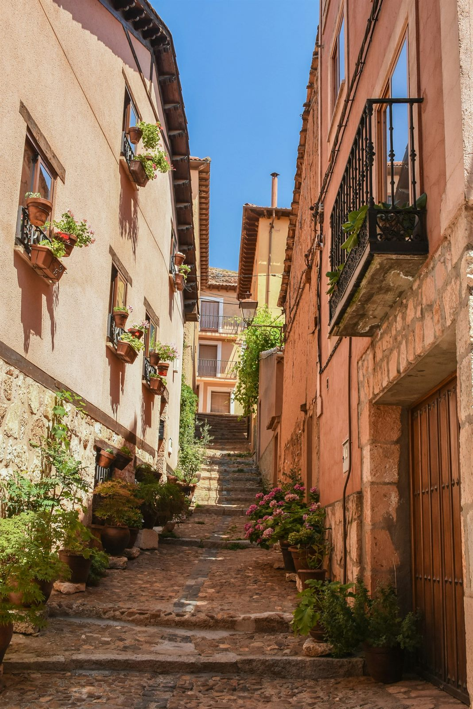

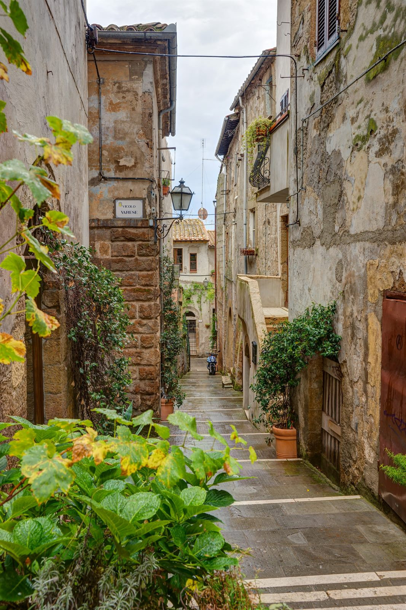
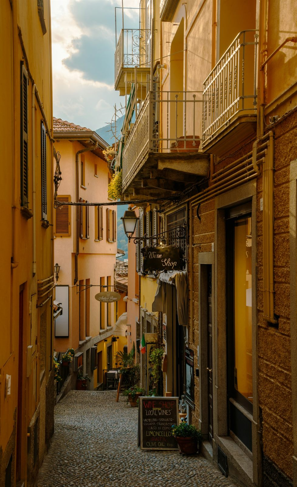
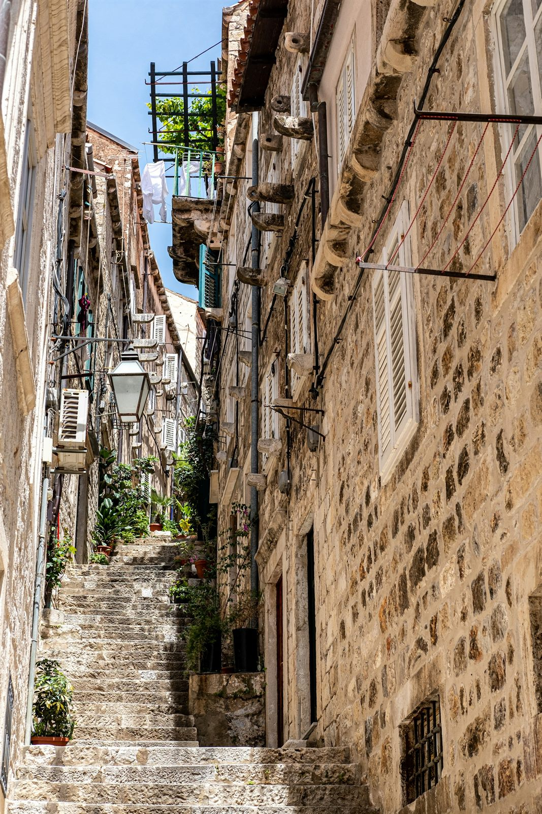
2장 사람 · 아이유
나는 좋아하는 마음을 노래와 행동으로 보여 주는 사람에게 끌린다

3장 공간
호숫가를 산책한다
선선한 바람과 따뜻한 햇빛을 받을 때
바람과 햇빛을 느끼며 마음이 잔잔해져서
밀려오는 파도를 바라보며 모래사장을 걷는다
파도 소리가 크게 들리는 바람 부는 날
바람과 파도 소리가 마음을 시원하게 해서

하늘과 땅이 만나는 선을 바라본다
바닥에 하늘이 그대로 비치는 맑은 날
하늘 한가운데 서 있는 것 같아서
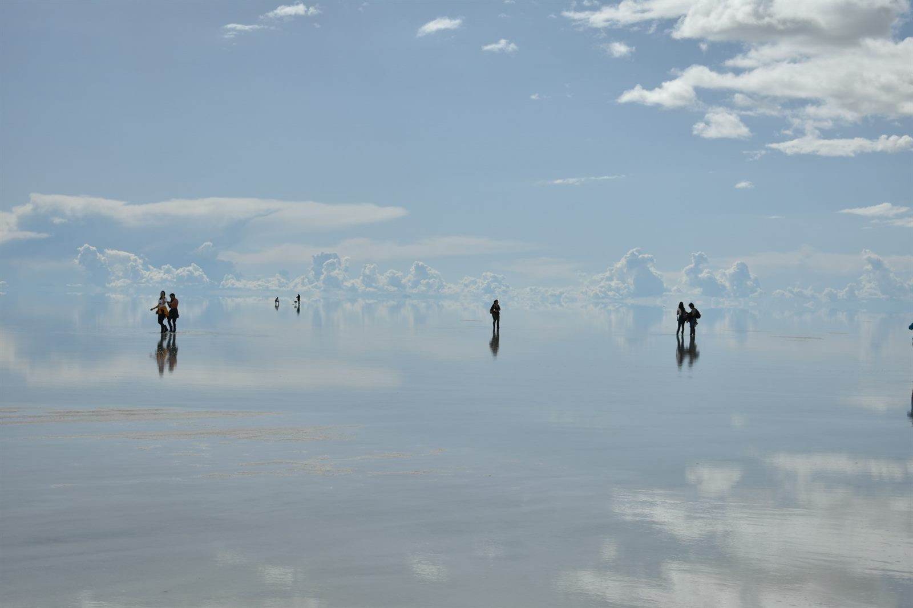
3장 공간 · 가까이
잔잔한 호숫가
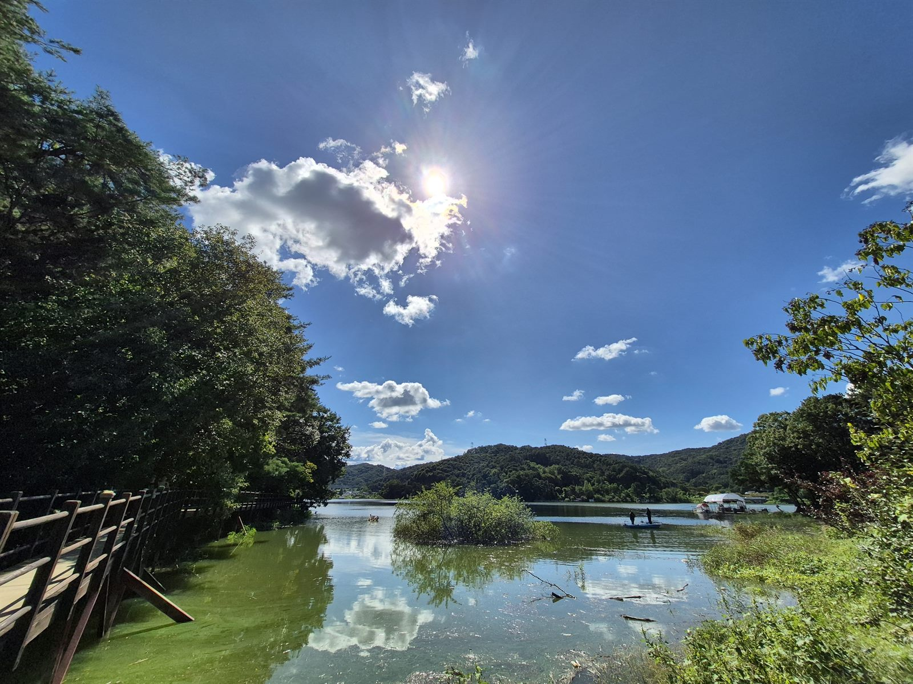
잔잔한 호숫가

잔잔한 호숫가

잔잔한 호숫가

파도치는 바닷가
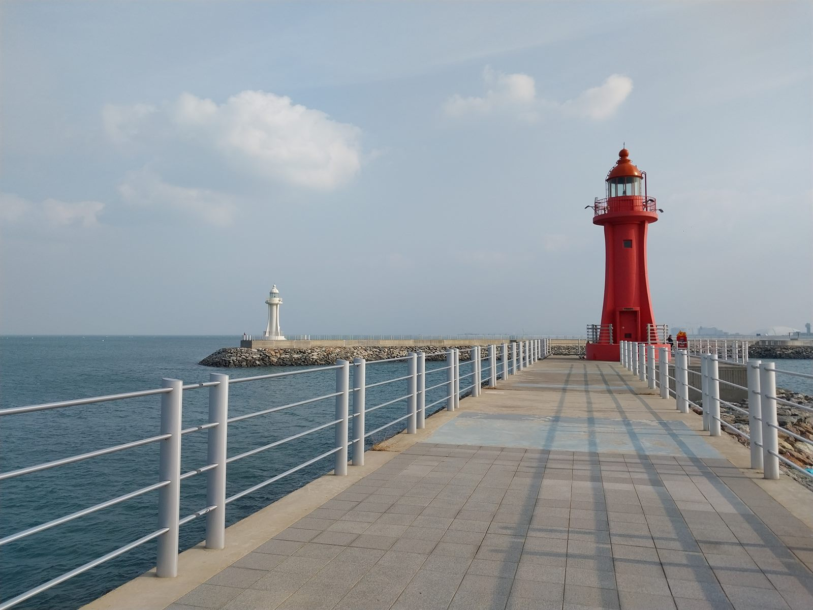
파도치는 바닷가
파도치는 바닷가
파도치는 바닷가

하늘과 땅이 만나는 곳
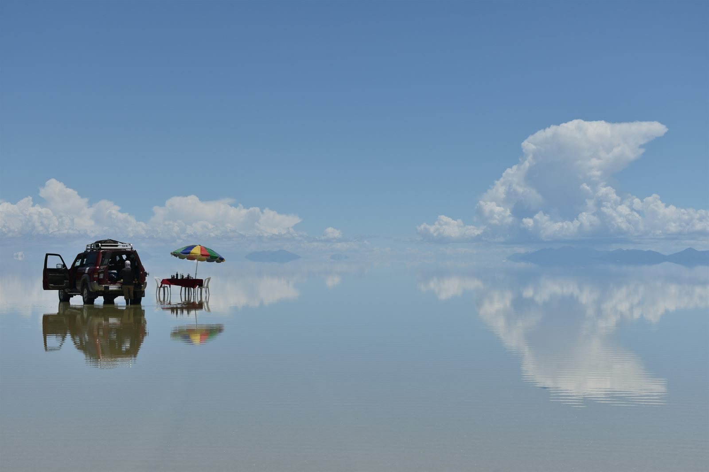
하늘과 땅이 만나는 곳
하늘과 땅이 만나는 곳
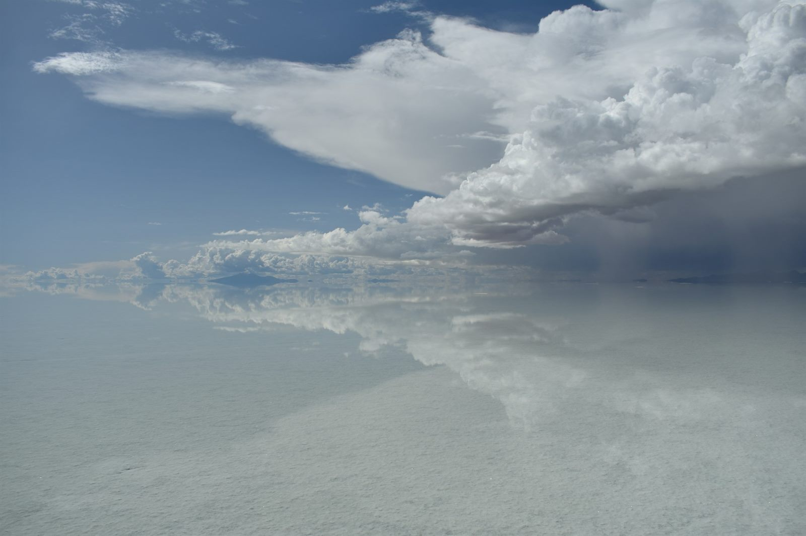
하늘과 땅이 만나는 곳

4장 물건
향과 색이 진하지 않고 은은하게 남는 물건
밖에 나가기 전에 입술에 바른다.
색이 진하지 않고 입술에 자연스럽게 묻어서
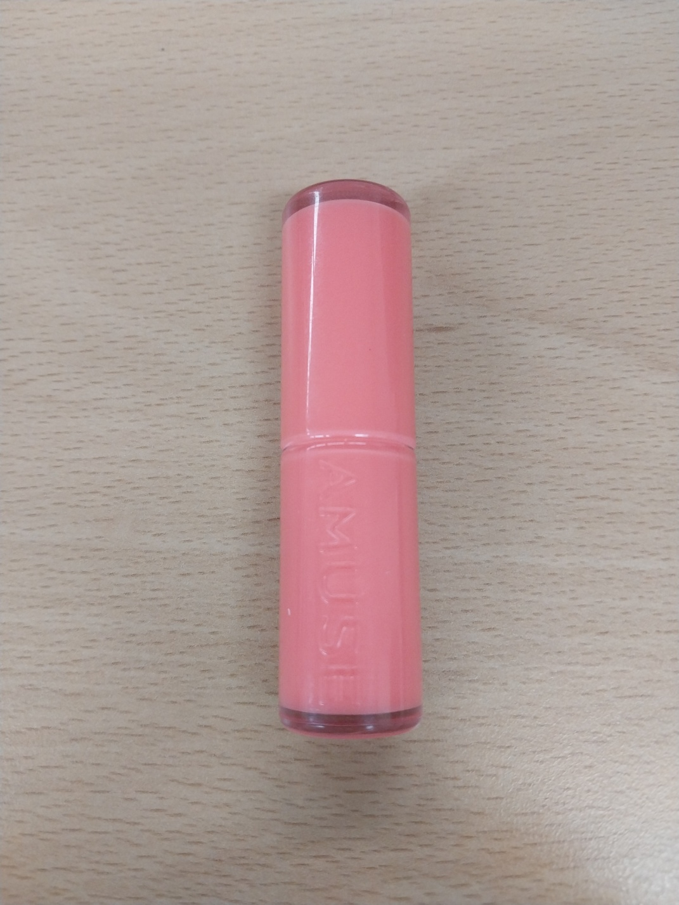
입술이 건조할 때마다 사용한다
특별한 향이나 색조 없이 입술을 촉촉하게 해서
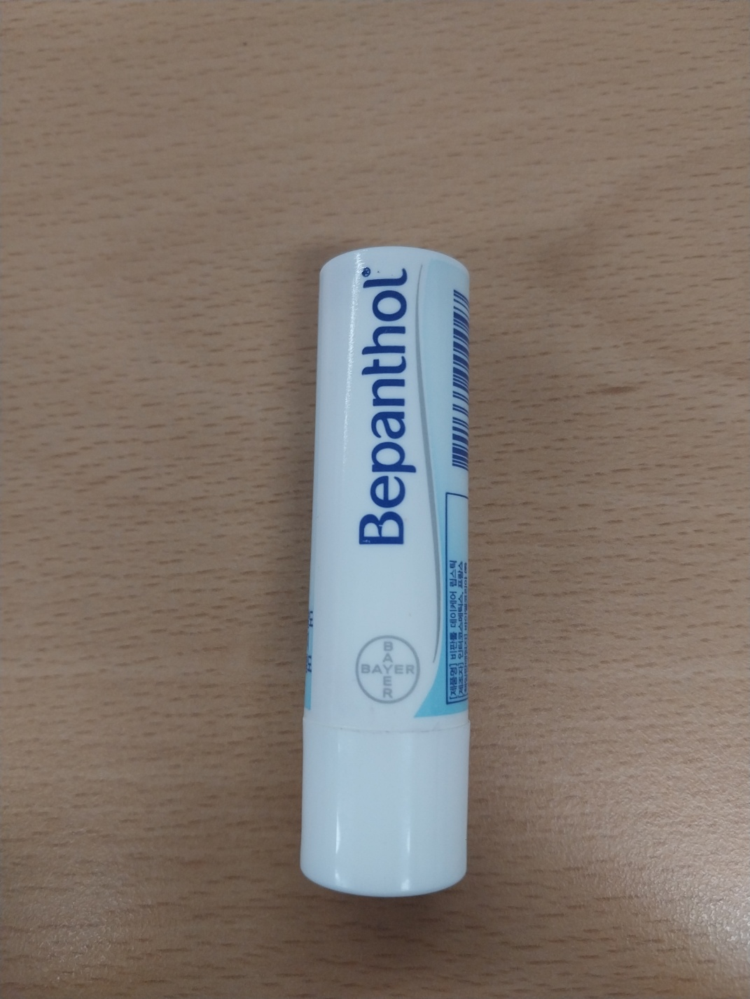
입이 심심하거나 상쾌한걸 먹고 싶을때
복숭아 향이 은은하게 나서
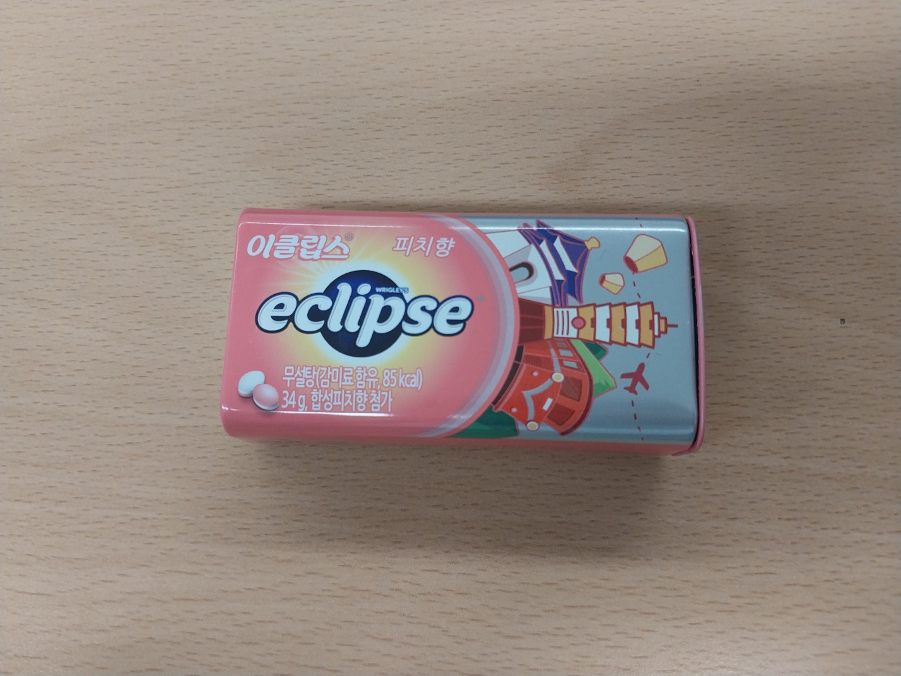
손이 건조할 때
향이 부담스럽지 않고 냄새가 좋아서
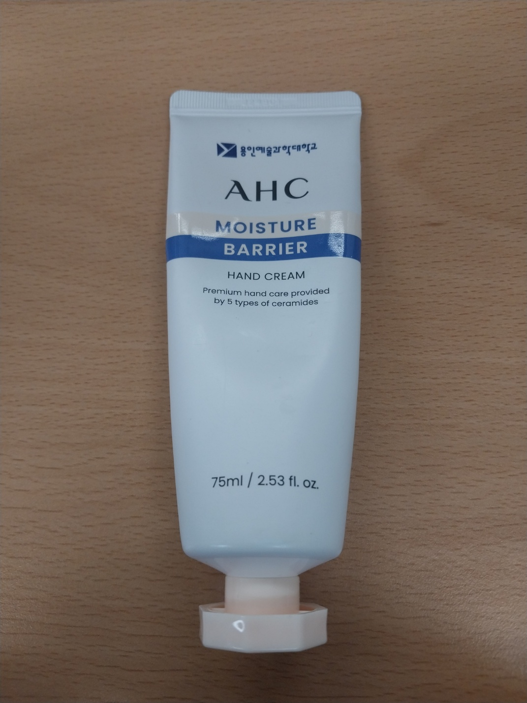
입술이 건조할 때
립밤에 은은한 향과 색조가 있어서

기준이
쌓이는 자리
시선나는 풍경을 고를 때 탁 트이고 조용히 머무는 순간을 고른다
사람나는 한 사람의 이야기를 보여 줄 때 천천히 읽히는 문장을 고른다
공간나는 머물 곳을 고를 때 마음이 잔잔해지는 탁 트인 곳을 고른다
싫은 것창문 없이 어둡고 답답한 방, 향이 강한 제품
물건나는 매일 쓰는 물건을 고를 때 향과 색이 은은하게 남는 것을 고른다
공통점
물과 하늘이 탁 트여 바람과 햇빛이 머무는 곳